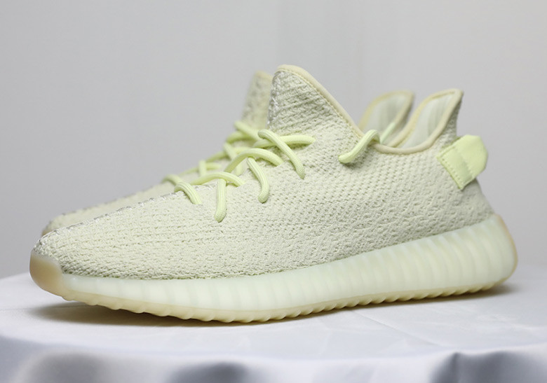

Home| Promoting Smaller Artist| Kanye's music
Kanye is often known for his music but he also has become a very popular name in the fashion industry.In 2009 Mr. West broke into the industry with yeezy season one and while it was fairly unpopular in 2009 it slow cultivated into one of the most recognizable brands of all times.

He was able to make the yeezy franchise into what it is today but collaborating with adidas in season two of yeezy is what brought his products into the fashion world and what pushed adidas to be ranked higher than Air Jordans this is also referenced in his song Facts (charlie heat version) where he says “ Yeezy, Yeezy, Yeezy just jumped over Jumpman”-Kanye West. And now his shoes are some of the most popular and most coveted in the world
As you can see only a genius could make a brand bigger than jordans in only 9 years
© 2018 AIT Contact us at info@example.com